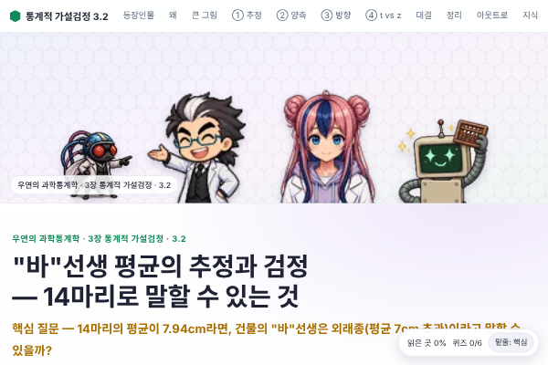
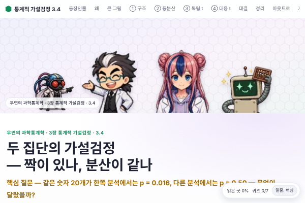

우연의 과학통계학 · 3장
통계적 가설검정
치료제 10명 중 7명이 나았다면 효과가 있다고 해도 될까? 흡연자의 폐가 더 상했다는 차이는 우연일까? 교육 프로그램 세 개 중 무엇이 나을까? 박사·하루·초파리 연구원·주판봇과 함께 귀무가설과 p값, t·z·χ² 검정, 두 집단 비교, 분산분석까지 직접 돌려 보며 익히고, 마지막에 100문항 모의고사로 정리합니다.
p = 0.03은 "귀무가설이 맞을 확률 3%"일까?
치료제 10명 중 7명이 나았다면 효과가 있다고 해도 될까? 흡연자의 폐가 더 상했다는 차이는 우연일까? 교육 프로그램 세 개 중 무엇이 나을까? 박사·하루·초파리 연구원·주판봇과 함께 귀무가설과 p값, t·z·χ² 검정, 두 집단 비교, 분산분석까지 직접 돌려 보며 익히고, 마지막에 100문항 모의고사로 정리합니다.
p = 0.03은 "귀무가설이 맞을 확률 3%"일까?

"내 말이 틀렸다고 하자"에서 시작하는 판정. 신뢰구간과 검정의 짝, 귀무·대립가설, 10명 중 7명 완치의 p값, 1종·2종 오류와 검정력.

오피스텔 "바"선생 14마리로 t 구간과 t 검정. "4.5cm가 아니다"와 "7cm를 넘는다"는 다른 가설입니다.

음료 용량은 t, 생활폐기물은 z, 배터리 무게 분산은 χ². 검정 고르기 계산기와 단측 방향 선택의 함정.

짝이 있나, 분산이 같나. 독립·대응표본, 등분산 검정, 합동분산 t와 Welch t. 같은 숫자로 p 0.016과 0.50이 갈립니다.

t 검정을 여러 번 하면 생기는 일. 변동 분해, 분산분석표와 F 검정, Bonferroni·Tukey 사후검정.

3.1~3.5를 복습하는 100문항 게임. 전체 50문제 모의고사와 묶음별 20문제, 타이머·효과음·오답 리뷰, 인쇄용 PDF.
귀무가설을 가정하고 p값으로 "얼마나 드문가"를 잽니다. 1종·2종 오류의 거래.
σ를 모르면 t, 알면 z, 분산이면 χ². 단측 방향은 질문에서 정합니다.
짝이 있으면 대응 t, 따로면 Welch t. 등분산 "통과"의 뜻.
분산분석과 사후검정, 그리고 100문항 모의고사.
 박사
박사해설과 판정. 판정은 숫자대로.
실험을 돌리고 숫자를 발표. 모의고사 진행도 맡습니다.
의심하는 쪽. "정말 그럴까?"
확신하는 쪽. 높은 숫자에 건다.
쉬운 칸에서 시작해, 각 칸의 한계가 다음 칸을 부릅니다. 칸마다 직접 만지는 시뮬레이션과 계산기가 있어요.
초파리(의심)와 주판봇(확신)이 서로 다른 선택을 하고, 페이지 안의 계산으로 승패가 갈립니다. 결과 보기 전에 먼저 맞혀 보세요.
칸마다 확인 퀴즈, 노란 점선 밑줄은 용어 풀이. 다 읽었으면 3.6 모의고사(100문항)로 마무리하고, 틀린 문항은 링크로 바로 돌아갑니다.